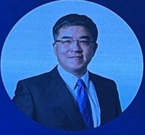
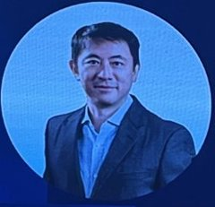

01講者 Snapshot



02一分鐘摘要
- 鞠志遠：半導體新創最大的關卡是第一個願意試用的客戶，比投資人更重要。
- 韓宗憲：半導體客戶不容許出錯，會用大供應商標準要求新創；他主張把國外半導體新創帶來台灣。
- 潘逸凡的淘金比喻：大廠需要客製化的鏟子，台灣廠商就在旁邊。
- AI 帶來的機會多是系統問題，集中在後段封裝、量測、散熱與供電。
- 瞿志豪：AI 需求是真的，但資本市場跑得比基本面快；修正時最怕夾在中間、沒彈性的一段。
03Key Takeaways
- 半導體新創最大的關卡是第一個願意試的客戶，重要性高於投資人。
鞠志遠說技術再新，關鍵是能否接觸到願意支持的客戶；歐姆佳 2020 年底遇到全球前三大的日本客戶願意導入新架構，而台灣客戶常先問誰用過、公司多少人。瞿志豪稱這是所有半導體領域新創，材料、設備皆同，最難打破的「沒有客戶就沒有客戶」。
- 半導體客戶不容許出錯，會用大供應商的標準要求新創；工研院等夥伴是補位關鍵。
韓宗憲以被投資公司的樣品為例：找 imec 做一套小量 CMOS 樣品的報價對新創過高，最後透過工研院合作完成。半導體高資本投入、絕對不能出錯，客戶會把新創的規模與執行能力和大供應商相比，所以早期投資要花的心力非常多。
- 台灣的機會來自大廠製造出來的新問題：誰先看到、做出客製化工具，誰就是夥伴。
潘逸凡以淘金比喻：標準鏟子沒用了，需要客製化的鏟子，大廠只好找附近的人做工具，這就是台灣的機會。瞿志豪補充：台積電走到世界前端後，改找教授與工研院解決問題，以免供應商轉身賣給競爭者，反而讓學界與供應鏈形成新創的 know-how。
- 半導體可能是台灣私人市場走向國際最好的缺口：把國外技術帶來台灣。
韓宗憲說服務業有語言文化限制，但半導體是台灣生態系「軍團作戰」的主場；國外研究機構技術很強卻缺「技術出口」。他舉 ITIC 2022 年在低潮投資的一家法國公司，2025 年 8 月獲 NVIDIA 投資；結論是技術與資本要一起配合，把國外新創帶來台灣，也讓台灣創投國際化。
- AI 帶來的半導體機會在系統問題：後段封裝、量測、散熱與供電。
潘逸凡說問題已不只是電路，而是材料科學與機械工程，且是要群體作戰的系統問題，後段封裝的挑戰會越來越多；韓宗憲說後段門檻相對低、機會多，前段最大的機會是量測；瞿志豪則以資料中心供電說明，傳統 48 伏特架構已不夠，需要拉高到 800 伏特等級。
- AI 需求是真的，但資本市場跑得比基本面快；修正時最怕夾在中間、沒彈性的一段。
瞿志豪說 AI 需求每年成長 50% 以上不是問題，但台股從去年約 2 萬點一路上漲，資本市場成長快於基本面。韓宗憲把半導體分三類：先進製程短期無虞、折舊完的 8 吋廠也還好，最擔心製程不夠先進又大量擴產的中間段；潘逸凡說實體需求成長會低於大家預期，變動大時最沒彈性的固定資產最吃虧。
重點投影片
延伸摘要 較長版
主持人瞿志豪一開始就要求不要照稿、歡迎吵架。鞠志遠以歐姆佳的經驗開場：2010 年從天線測試設備起家、轉進半導體測試，關鍵是 2020 年底遇到一家全球前三大的日本客戶願意試新架構；台灣客戶則常先問「誰用過」「你們公司多少人」——半導體新創最難打破的就是沒人想當第一隻白老鼠。韓宗憲談實務：一套小量樣品若找比利時 imec 做，報價對新創太高，最後透過工研院合作才做成；半導體客戶不容許出錯，會把新創當成大供應商同等要求。潘逸凡用淘金比喻：標準鏟子已不夠用，大廠需要客製化工具，而能在旁邊快速解決問題的台灣廠商就有機會。瞿志豪補充台積電的心態轉變：走到世界前端後，與其找第一名供應商，對方可能轉身賣給競爭者，不如找教授或工研院解題，反而形成新創的 know-how。韓宗憲認為半導體是台灣私人市場與新創走向國際最好的缺口，舉 ITIC 2022 年在低潮時投資的一家法國公司、2025 年 8 月獲 NVIDIA 投資為例，主張把國外新創帶來台灣、讓台灣資本市場國際化。談 AI，潘逸凡說問題已變成材料科學與機械工程的系統問題，後段封裝的挑戰會越來越多；韓宗憲認為前段最大的機會在量測。對於 AI 泡沫，瞿志豪認為需求是真的、每年成長 50% 以上沒問題，但資本市場長得比基本面快；韓宗憲最擔心「夾在中間」的製程；潘逸凡則說實體需求成長低於股價預期，變動時最沒彈性的固定資產最吃虧。